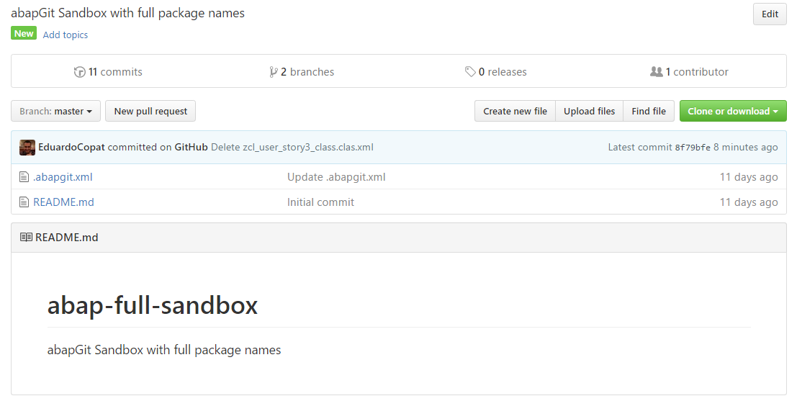
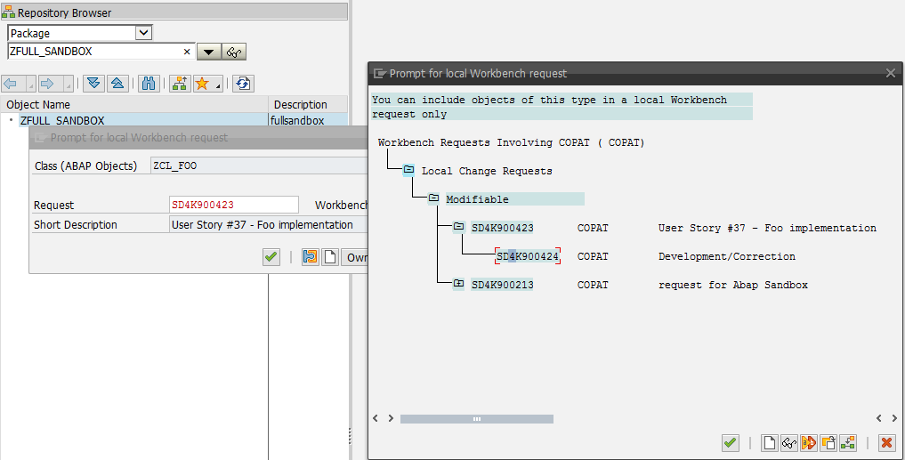
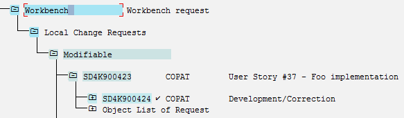
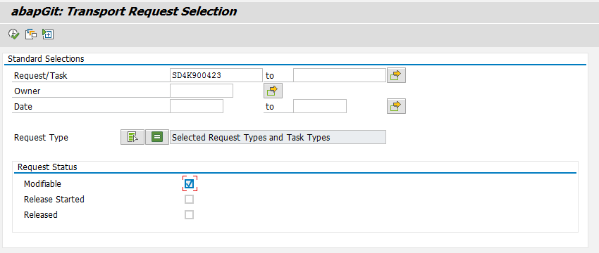
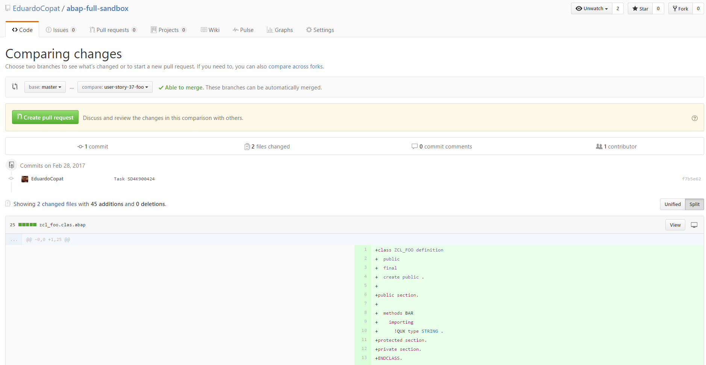
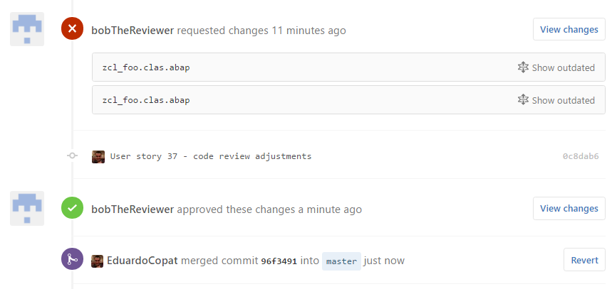

Using abapGit and Github as an ABAP code review tool
Motivation
- No code review tool
- Github development flow is easy to understand
- Pull request flow allows code reviews
- Possible to track code review changes
- Leverage abapGit offline functionalities
| abapGit |
| started ~3 years ago |
| ~1000 commits |
| 12 contributors |
| ~40000 lines |
| 7.02 and up |
Proposed "offline + github" Workflow
Step 1 - Create a github abapGit project

Step 2 - Developer receives a new User Story, creates a Transport request and work over it

Step 3 - When development is done, release the task

Step 4 - zip the request using abapGit

Step 5 - Create a branch, commit contents from zip
$ git clone https://github.com/EduardoCopat/abap-full-sandbox.git
$ git checkout -b "user-story-37-foo"
Unzip abapGit files into folder
$ git add *
$ git commit -m "Task SD4K900424"
$ git push origin user-story-37-foo
Step 6 - Open a pull request, sets reviewer , code is reviewed

Step 7 - Developer adjusts the code and push to branch again. Reviewer checks again. Code review is complete.

Alternative workflows/improvements
- Current proposed workflow requires lots of manual work, could be automated using abap BAPIs and abapGit APIs
- Instead of using an offline repository, one could directly conect to github also with abapGit
- setup a CI server to run unit tests and code inspector based on the task
Thanks
Eduardo Ferrari Copat